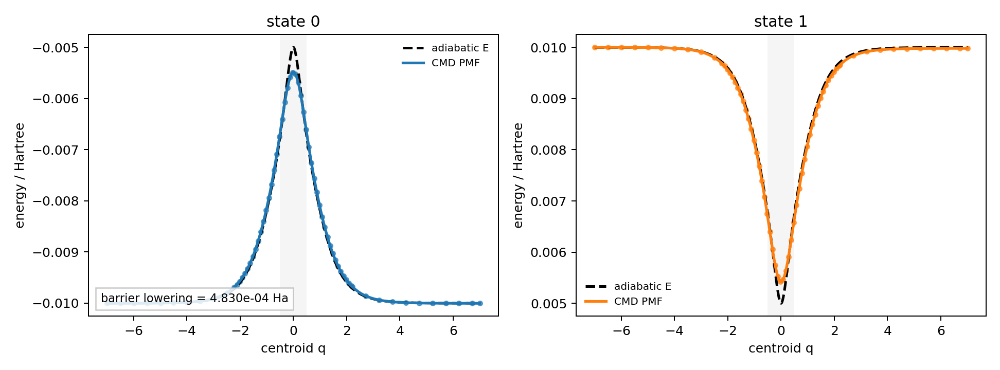
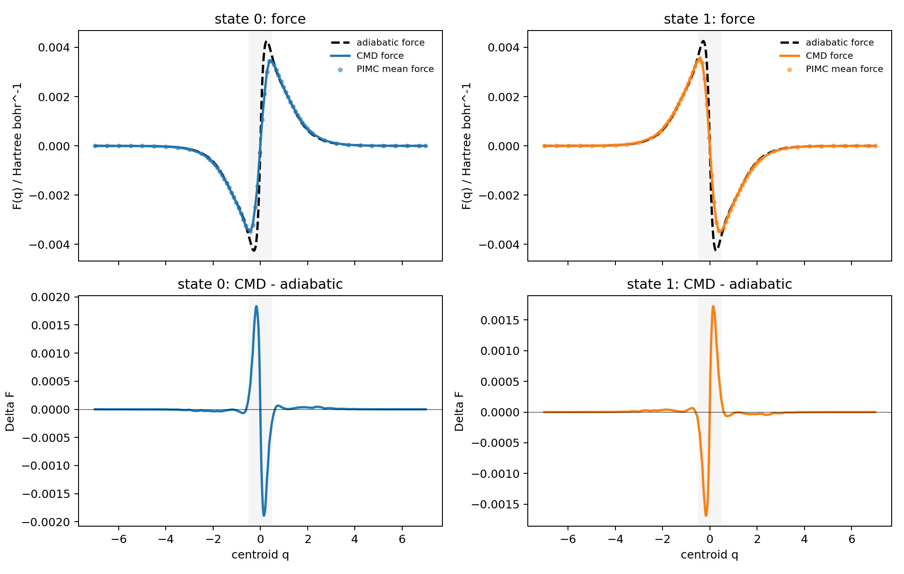
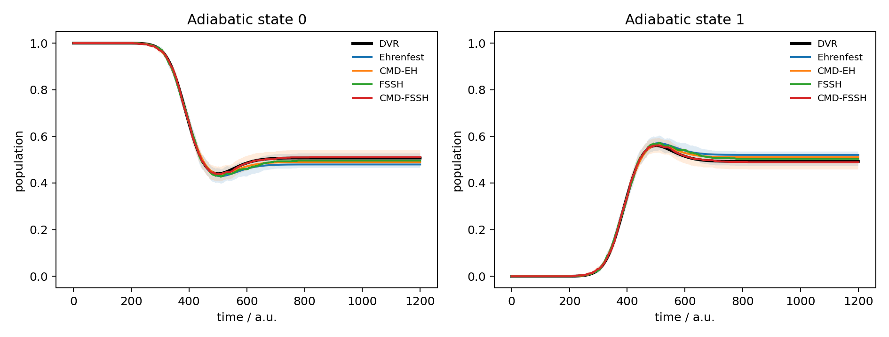
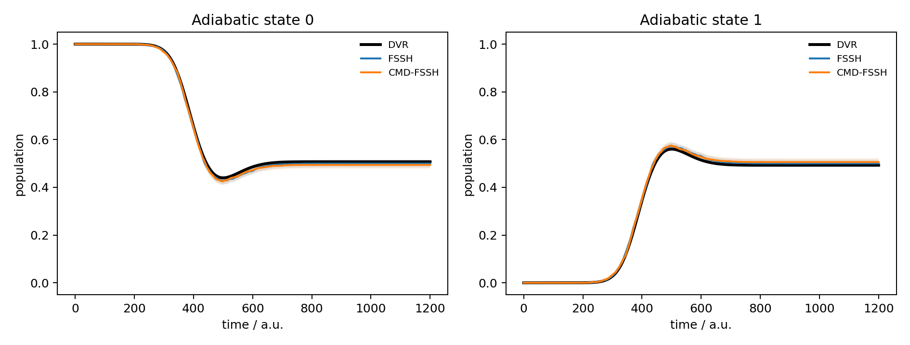
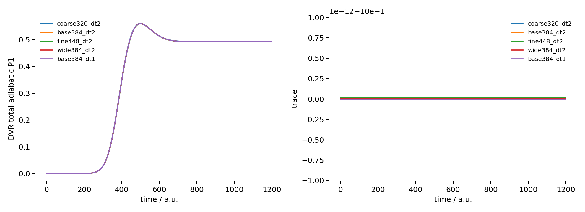
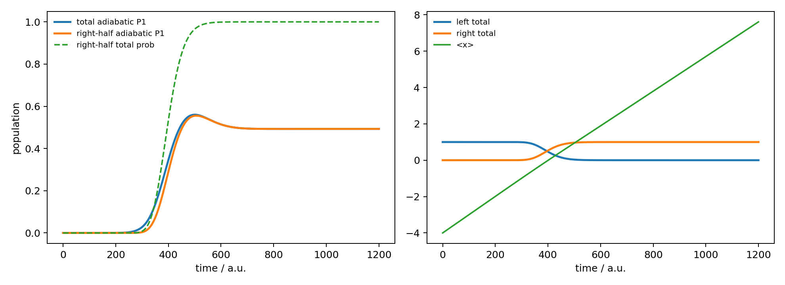

Model Calculation
CMD Effective Surfaces for Tully SAC
This note builds a centroid molecular dynamics (CMD) effective surface for Tully's simple avoided crossing, then uses that surface in Ehrenfest and fewest-switches surface hopping dynamics. The central object is not a new nonadiabatic coupling formula, but a state-resolved potential of mean force obtained from constrained path-integral Monte Carlo.
Why a CMD Surface?
A classical mixed quantum-classical trajectory samples one nuclear point \(Q\) at a time. Near a narrow avoided crossing, however, a quantum nuclear packet can delocalize across the coupling region. CMD folds part of this nuclear quantum delocalization into an effective free-energy surface for the centroid coordinate. In a one-dimensional two-state benchmark this is a useful diagnostic: far from the avoided crossing the CMD surface should reduce to the ordinary adiabatic energy, while near the coupling region the lower-state barrier can be softened by imaginary-time delocalization.
The implementation used here is deliberately conservative. It precomputes the CMD potential of mean force (PMF) on an adaptive grid, aligns the PMF in the non-coupled reactant asymptote, interpolates a continuous energy-force pair, and only then runs Ehrenfest and FSSH trajectories. It is not an on-the-fly PIMC calculation during dynamics.
Constrained PIMC on One Adiabatic State
For each adiabatic state \(s\) and centroid value \(Q\), a ring-polymer path \(\{q_i\}_{i=1}^{P}\) is sampled under the exact centroid constraint
The state-resolved Euclidean action is
The Metropolis move changes one bead, then shifts the entire path so that the centroid returns exactly to \(Q\). This keeps the constrained ensemble well defined without adding a penalty potential. In this benchmark the highest PMF level used \(P=8\) beads and \(15000\) Monte Carlo steps per grid point and state. The adaptive centroid grid has 66 points over \([-7,7]\), with spacing \(0.1\) in the coupling region \([-2.221,2.221]\) and spacing \(0.5\) outside.
Mean Force and PMF Integration
The PMF is reconstructed from a constrained mean force, not from a simple average of adiabatic energies. For a sampled path, the bead-averaged force on state \(s\) is
The CMD force is the constrained ensemble average
The state-resolved PMF \(A_s(Q)\) is then obtained by integrating
Because a PMF is defined only up to a constant, each state is aligned by a least-squares shift in the reactant asymptote \(Q\le -3\). This is important: aligning at \(Q=0\) would pin the avoided crossing itself and hide the barrier lowering that CMD is meant to reveal. After asymptotic alignment, the residual mismatch in the left non-coupled region is about \(3\times 10^{-6}\) hartree.

Interpolating a Continuous \(E(Q)\) and \(F(Q)\)
Dynamics cannot run directly on isolated PMF grid values. The surface must provide a continuous energy and a force that is consistent with that energy. The benchmark therefore uses a cubic Hermite spline for each state:
The force used in dynamics is the derivative of the same spline,
This avoids a common inconsistency: fitting energy and force with two unrelated splines can produce a trajectory force that is not the derivative of the plotted surface. In the present implementation the diagonal energies and diagonal forces are replaced by the CMD effective values, while the adiabatic wavefunctions and derivative couplings are still evaluated from the original Tully model at the centroid.

Dynamics on the CMD Surface
The same initial ensemble is used for ordinary and CMD dynamics: a boosted harmonic thermal density centered at \(q_0=-4\), mean momentum \(p_0=20\), mass \(M=2000\), temperature \(300\) K, and preparation frequency \(\omega=0.004\) a.u. The quantum reference is a DVR density-matrix propagation on Tully's simple avoided crossing. The trajectory methods propagate to \(t=1200\) a.u.; this is long enough for the packet to leave the coupling region and for the final DVR population to plateau.
For Ehrenfest, the nuclear force is the electronic-population-weighted average of the CMD state forces. For FSSH, each trajectory moves on an active CMD surface, while hop probabilities still use the original derivative coupling evaluated at the centroid. The calculation is therefore a minimal CMD effective-surface correction, not a complete path-integral nonadiabatic theory.

Benchmark Numbers
The PMF convergence check compares \(5000\) and \(15000\) PIMC steps per centroid point and state. The maximum PMF difference is \(8.89\times10^{-5}\) hartree and the RMS difference is \(4.41\times10^{-5}\) hartree. The lower-state barrier lowering measured from the left reactant basin is \(4.83\times10^{-4}\) hartree.
| Method | Trajectories | Final \(P_1\) | DVR final \(P_1\) | Final absolute error | RMS error vs DVR |
|---|---|---|---|---|---|
| DVR | - | 0.492785 | 0.492785 | 0 | 0 |
| Ehrenfest | 1024 | 0.520624 | 0.492785 | 0.027839 | 0.020349 |
| CMD-Ehrenfest | 1024 | 0.510500 | 0.492785 | 0.017715 | 0.012802 |
| FSSH | 4096 | 0.500488 | 0.492785 | 0.007703 | 0.007962 |
| CMD-FSSH | 4096 | 0.505859 | 0.492785 | 0.013074 | 0.010601 |
Two points are worth keeping separate. First, CMD-Ehrenfest improves the Ehrenfest result for this setup. Second, CMD-FSSH is not automatically superior to ordinary FSSH after trajectory convergence: the 4096-trajectory extension gives a smaller prefix RMS convergence error for CMD-FSSH, but the final RMS error against DVR is slightly larger than ordinary FSSH. The CMD surface is physically interpretable, but it is not a universal correction for every MQC closure.

DVR Reference and Monotonicity
The DVR reference itself was checked against grid, box, and time-step changes. Relative to the \(N_{\mathrm{DVR}}=384\), \(x_{\max}=18\), \(\Delta t=2\) baseline, the final \(P_1\) changes by \(5.44\times10^{-4}\) for \(N_{\mathrm{DVR}}=320\), \(4.22\times10^{-4}\) for \(N_{\mathrm{DVR}}=448\), \(1.21\times10^{-4}\) for \(x_{\max}=22\), and zero to printed precision when halving the time step to \(\Delta t=1\). The density trace is conserved to about \(10^{-14}\).
The plotted DVR quantity is the total instantaneous adiabatic population \(P_1(t)\), not a cumulative transmitted flux. It is therefore not required to be monotonic: it overshoots near \(t=500\) a.u. and relaxes to the asymptotic value. This overshoot is also converged. In contrast, the right-half total probability is monotonic and reaches \(0.99999996\), confirming that the packet has scattered out of the coupling region.


Code and Data
- cmd_sac_benchmark.py builds the adaptive CMD PMF, runs DVR, Ehrenfest, FSSH, CMD-Ehrenfest, and CMD-FSSH, and writes the main population figures.
- cmd_sac_extend_fssh.py reuses a saved CMD PMF and DVR result to extend the FSSH and CMD-FSSH trajectory convergence to 4096 trajectories.
- cmd_sac_dvr_convergence.py runs the DVR-only grid, box, and time-step convergence diagnostics.
- cmd-sac-summary.csv stores the 1024-ensemble EH/CMD-EH/FSSH/CMD-FSSH comparison.
- cmd-sac-fssh4096-summary.csv stores the 4096-trajectory FSSH and CMD-FSSH comparison.
- cmd-sac-pimc-diffs.csv stores the PIMC PMF convergence difference.
- cmd-sac-barrier-metrics.csv stores the PMF barrier-lowering metrics.
- cmd-sac-dvr-convergence-metrics.csv and cmd-sac-dvr-convergence-vs-base.csv store the DVR convergence evidence.